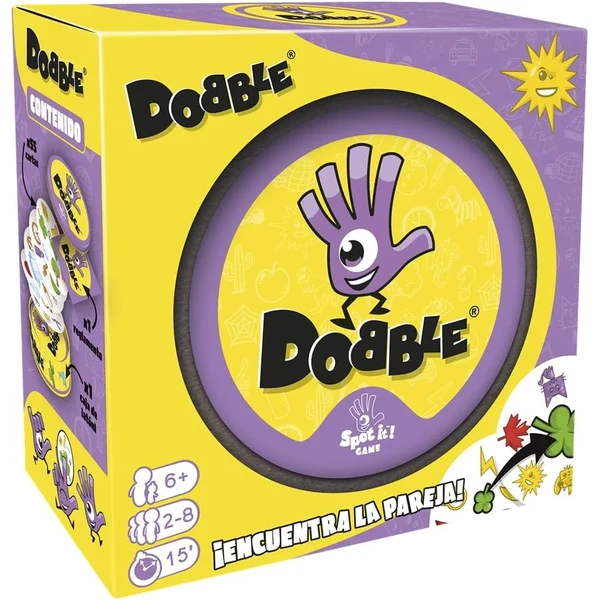
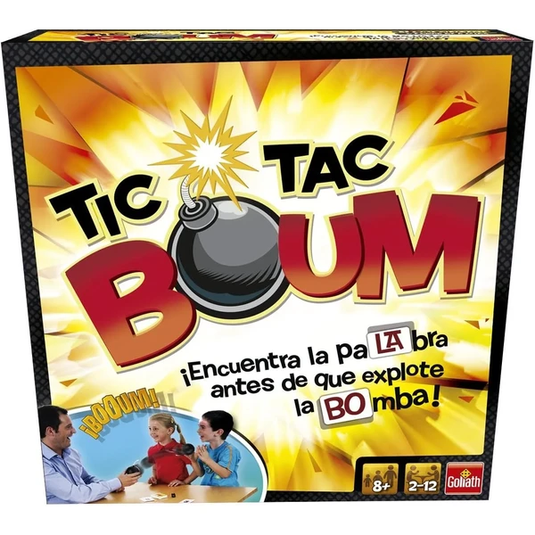
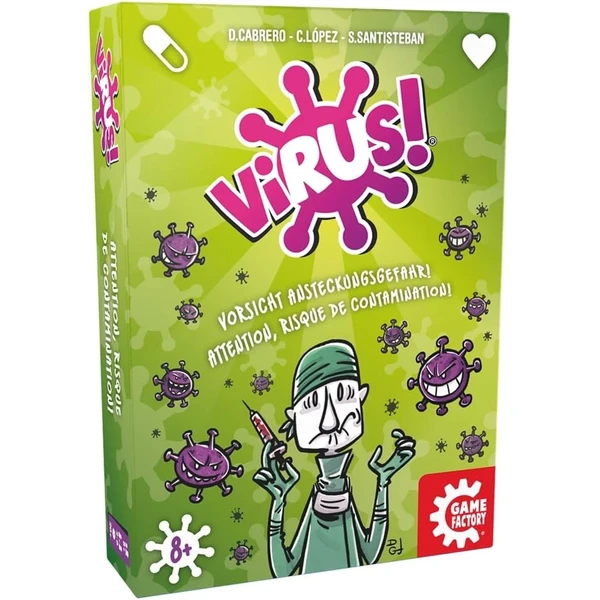
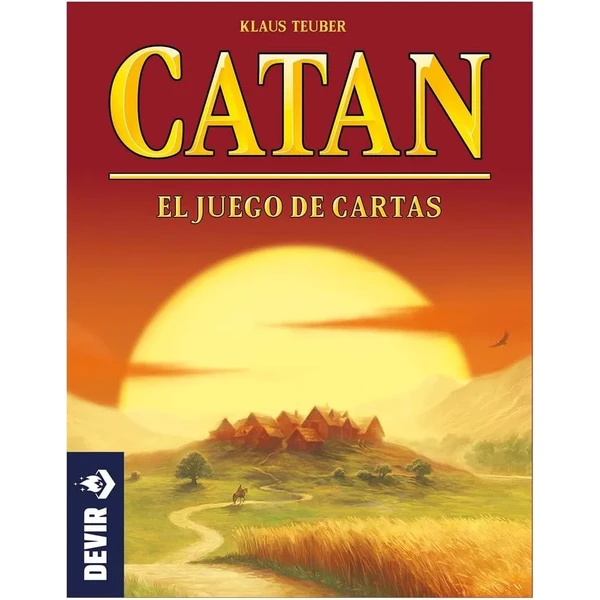
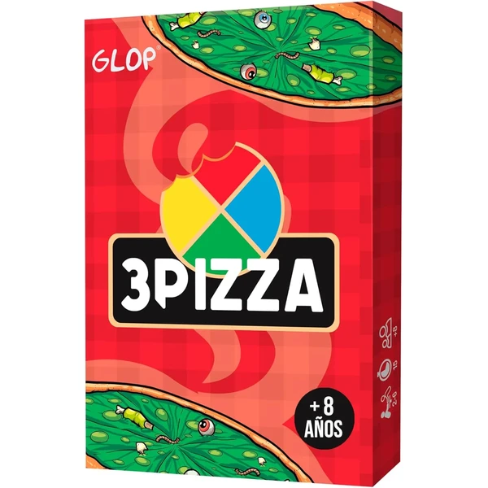
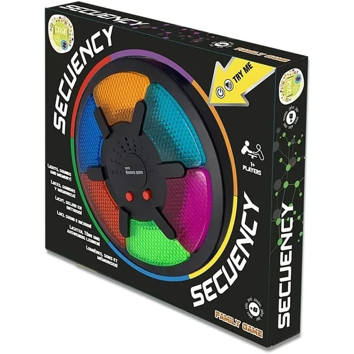
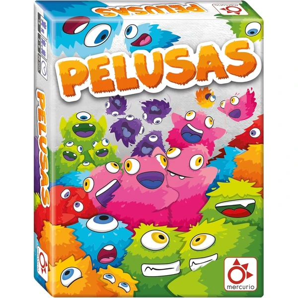

Dobble Clásico
Un juego de cartas de observación y velocidad en el que hay que encontrar el símbolo que se repite entre dos cartas antes que el resto de jugadores. Partidas rápidas de unos 15 minutos, ideales para toda la familia.
⭐ ¿Por qué nos gusta?
- ✔ Desarrolla velocidad de observación.
- ✔ Partidas de solo 15 minutos.
- ✔ Caja compacta, fácil de llevar de viaje.
💬 Lo que más destacan las familias
Muchos padres coinciden en que engancha por igual a niños y adultos, algo poco habitual en un juego de cartas tan sencillo. La caja de hojalata también se valora porque resiste bien el uso y el transporte.
Ver en Amazon

Devir Polilla Tramposa
Un juego de cartas rápido en el que el objetivo es deshacerse de todas las cartas colocando números consecutivos, haciendo trampas sin que el resto se dé cuenta. Partidas de 15 a 25 minutos, premiado como mejor juego infantil.
⭐ ¿Por qué nos gusta?
- ✔ Premiado como mejor juego infantil en 2012.
- ✔ Anima a hacer trampas con ingenio, sin enfadar.
- ✔ Partidas cortas de 15-25 minutos.
💬 Lo que más destacan las familias
Entre los comentarios más habituales aparece lo divertido que resulta el punto de hacer trampas de forma permitida, algo que sorprende gratamente a los niños. Las reglas sencillas facilitan que se aprenda en la primera partida.
Ver en Amazon

Goliath Tic Tac Boum
Un juego de palabras contrarreloj en el que hay que decir una palabra con la sílaba indicada antes de que estalle la bomba de juguete. Desarrolla vocabulario y rapidez verbal para toda la familia.
⭐ ¿Por qué nos gusta?
- ✔ Desarrolla vocabulario y rapidez verbal.
- ✔ Cronómetro con forma de bomba, muy divertido.
- ✔ Para 2 a 12 jugadores.
💬 Lo que más destacan las familias
Una de las cosas más comentadas es la tensión que genera el cronómetro, que anima a pensar rápido sin agobiar demasiado. Se recomienda para reuniones familiares numerosas por la cantidad de jugadores que admite.
Ver en Amazon

Game Factory Virus
Un juego de cartas de acción rápida en el que hay que contagiar virus al resto de jugadores mientras te curas de los tuyos. Reglas simples que permiten empezar a jugar casi de inmediato.
⭐ ¿Por qué nos gusta?
- ✔ Reglas simples, entrada rápida al juego.
- ✔ Partidas de unos 20 minutos.
- ✔ Para 2 a 6 jugadores.
💬 Lo que más destacan las familias
Lo que más suele gustar es lo adictivo que resulta, con partidas que casi siempre acaban pidiendo la revancha. Las cartas de acción añaden un punto de humor que gusta especialmente a los más pequeños.
Ver en Amazon

Devir Catan el Juego de Cartas
Versión de cartas del clásico Catan, pensada para partidas más cortas y fáciles de transportar. Un juego independiente de unos 30 minutos, ideal para iniciarse en el universo Catan.
⭐ ¿Por qué nos gusta?
- ✔ Versión compacta del clásico Catan.
- ✔ Partidas de unos 30 minutos.
- ✔ Fácil de transportar en cualquier bolsa.
💬 Lo que más destacan las familias
Se repite bastante el comentario de que es una buena puerta de entrada al mundo Catan antes de dar el salto al juego de tablero completo. También se valora que las partidas sean más ágiles que en la versión original.
Ver en Amazon

Glop 3Pizza
Un juego de cartas rápido en el que hay que ser el camarero más ágil sirviendo pizzas sin cometer errores. Partidas de 10 a 15 minutos, fáciles de aprender gracias a un vídeo explicativo incluido.
⭐ ¿Por qué nos gusta?
- ✔ Partidas muy rápidas, de 10 a 15 minutos.
- ✔ Incluye vídeo explicativo de las reglas.
- ✔ Para 2 a 6 jugadores.
💬 Lo que más destacan las familias
No es raro encontrar comentarios sobre lo rápido que se aprende gracias al vídeo explicativo incluido. Las partidas cortas lo convierten en un buen comodín para esos ratos en los que se busca algo ágil y divertido.
Ver en Amazon

Tachan Secuency
Un juego electrónico de memoria en el que hay que repetir secuencias de luces y sonidos cada vez más largas. Pone a prueba la concentración y la memoria de varios jugadores a la vez.
⭐ ¿Por qué nos gusta?
- ✔ Pone a prueba memoria y concentración.
- ✔ Secuencias de luces y sonidos cada vez más largas.
- ✔ Funciona con pilas incluidas.
💬 Lo que más destacan las familias
Un detalle que aparece una y otra vez es lo entretenido que resulta competir por ver quién aguanta secuencias más largas. Es un juego que gusta tanto en solitario como en grupo.
Ver en Amazon

Mercurio Pelusas
Un juego de cartas en el que hay que decidir cuándo parar de acumular puntos antes de arriesgarse a perderlos todos. Incluye 110 cartas y reglas fáciles de aprender para partidas de unos 20 minutos.
⭐ ¿Por qué nos gusta?
- ✔ Combina azar y estrategia para decidir cuándo parar.
- ✔ 110 cartas para partidas dinámicas.
- ✔ Reglas fáciles, se aprende en la primera partida.
💬 Lo que más destacan las familias
Una característica muy mencionada es la tensión de decidir si seguir arriesgando o quedarse con lo ganado, que mantiene el interés en cada turno. Se valora también que las partidas sean cortas y muy dinámicas.
Ver en Amazon